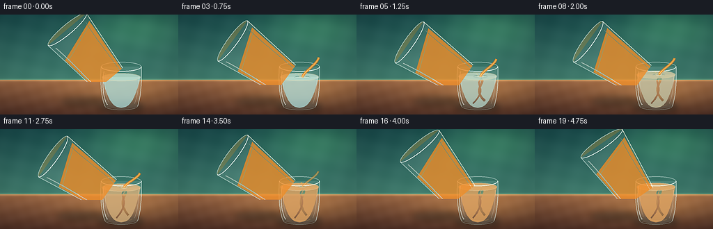
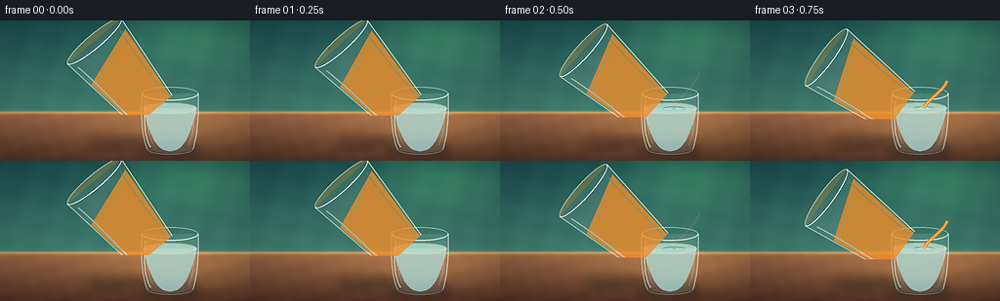

CODING AGENTS AS PIXEL WORLD MODELS
traex/DeepSeek-V4.1-Flash · phygen_139
点击播放 · 原生 RGB 像素
逐轮保存的候选
回放视频、检查图与代码变化。
每份候选均可单独播放。实际图片检查记录在下方工具轨迹中。
候选 01播放与检查图
点击播放 · 原生 RGB 像素


展开代码变化
--- 上一保存版本
+++ 本次保存版本
@@ -0,0 +1,363 @@
+from __future__ import annotations
+
+import math
+from pathlib import Path
+
+import numpy as np
+from PIL import Image, ImageDraw, ImageFilter
+
+import artifact_io
+
+
+CASE_DIR = Path(__file__).resolve().parent
+WIDTH, HEIGHT, FRAMES, FPS = 256, 144, 20, 4.0
+SS = 3
+W, H = WIDTH * SS, HEIGHT * SS
+
+
+def clamp(value: float, low: float = 0.0, high: float = 1.0) -> float:
+ return max(low, min(high, value))
+
+
+def smoothstep(value: float) -> float:
+ value = clamp(value)
+ return value * value * (3.0 - 2.0 * value)
+
+
+def mix(a, b, amount: float):
+ return tuple(round(x + (y - x) * amount) for x, y in zip(a, b))
+
+
+def rgba(color, alpha: int):
+ return (color[0], color[1], color[2], alpha)
+
+
+def scaled_point(point):
+ return (round(point[0] * SS), round(point[1] * SS))
+
+
+def bezier(p0, p1, p2, p3, count=40):
+ points = []
+ for index in range(count + 1):
+ t = index / count
+ u = 1.0 - t
+ x = u**3 * p0[0] + 3 * u * u * t * p1[0] + 3 * u * t * t * p2[0] + t**3 * p3[0]
+ y = u**3 * p0[1] + 3 * u * u * t * p1[1] + 3 * u * t * t * p2[1] + t**3 * p3[1]
+ points.append((x, y))
+ return points
+
+
+class Pen:
+ def __init__(self, draw: ImageDraw.ImageDraw):
+ self.draw = draw
+
+ def line(self, points, fill, width=1.0, joint="curve"):
+ self.draw.line([scaled_point(p) for p in points], fill=fill,
+ width=max(1, round(width * SS)), joint=joint)
+
+ def polygon(self, points, fill=None, outline=None, width=1.0):
+ self.draw.polygon([scaled_point(p) for p in points], fill=fill)
+ if outline is not None:
+ self.line(points + [points[0]], outline, width=width)
+
+ def ellipse(self, center, radii, fill=None, outline=None, width=1.0):
+ cx, cy = center
+ rx, ry = radii
+ box = (round((cx - rx) * SS), round((cy - ry) * SS),
+ round((cx + rx) * SS), round((cy + ry) * SS))
+ self.draw.ellipse(box, fill=fill, outline=outline,
+ width=max(1, round(width * SS)))
+
+ def arc(self, center, radii, start, end, fill, width=1.0):
+ cx, cy = center
+ rx, ry = radii
+ box = (round((cx - rx) * SS), round((cy - ry) * SS),
+ round((cx + rx) * SS), round((cy + ry) * SS))
+ self.draw.arc(box, start, end, fill=fill, width=max(1, round(width * SS)))
+
+ def dot(self, center, radius, fill):
+ self.ellipse(center, (radius, radius), fill=fill)
+
+
+def layer() -> tuple[Image.Image, Pen]:
+ image = Image.new("RGBA", (W, H), (0, 0, 0, 0))
+ return image, Pen(ImageDraw.Draw(image))
+
+
+def composite(base: Image.Image, overlay: Image.Image) -> Image.Image:
+ return Image.alpha_composite(base, overlay)
+
+
+def background() -> Image.Image:
+ yy, xx = np.mgrid[0:H, 0:W]
+ x = xx / (W - 1)
+ y = yy / (H - 1)
+ image = np.zeros((H, W, 3), dtype=np.float32)
+
+ wall_top = np.array([26, 77, 78], dtype=np.float32)
+ wall_bottom = np.array([66, 126, 111], dtype=np.float32)
+ wall_t = np.clip(y / 0.65, 0.0, 1.0)[..., None]
+ wall = wall_top * (1.0 - wall_t) + wall_bottom * wall_t
+
+ glow = np.exp(-(((x - 0.78) / 0.42) ** 2 + ((y - 0.12) / 0.32) ** 2) * 1.8)
+ wall += glow[..., None] * np.array([24, 42, 18], dtype=np.float32)
+
+ texture = (np.sin(xx * 0.061 + yy * 0.017) * 1.7
+ + np.sin(xx * 0.019 - yy * 0.083) * 1.2)
+ wall += texture[..., None]
+
+ table_start = 0.655
+ table_mask = np.clip((y - table_start) / (1.0 - table_start), 0.0, 1.0)
+ table_top = np.array([157, 104, 69], dtype=np.float32)
+ table_bottom = np.array([83, 50, 39], dtype=np.float32)
+ table = table_top * (1.0 - table_mask[..., None]) + table_bottom * table_mask[..., None]
+ table_light = np.exp(-(((x - 0.68) / 0.50) ** 2 + ((y - 0.77) / 0.25) ** 2) * 2.2)
+ table += table_light[..., None] * np.array([35, 28, 11], dtype=np.float32)
+
+ table_tex = (np.sin(xx * 0.033 + yy * 0.113) * 1.8
+ + np.sin(xx * 0.11 - yy * 0.041) * 1.1)
+ table += table_tex[..., None]
+
+ mask = (yy >= int(table_start * H))[..., None]
+ image[:] = wall
+ image = np.where(mask, table, image)
+
+ # A fine, pale edge gives the tabletop a physical boundary.
+ edge = np.exp(-((yy - table_start * H) / (1.7 * SS)) ** 2)[..., None]
+ image += edge * np.array([49, 45, 26], dtype=np.float32)
+
+ vignette = 1.0 - 0.18 * (((x - 0.5) / 0.72) ** 2 + ((y - 0.48) / 0.78) ** 2)
+ image *= np.clip(vignette, 0.72, 1.0)[..., None]
+ return Image.fromarray(np.clip(image, 0, 255).astype(np.uint8), "RGB").convert("RGBA")
+
+
+DEST = {
+ "cx": 174.0,
+ "top": 75.0,
+ "bottom": 132.0,
+ "rx_top": 29.0,
+ "rx_bottom": 23.5,
+ "rim_ry": 7.0,
+}
+
+
+def dest_body_points():
+ left = bezier((145, 75), (143.5, 96), (145, 118), (150.5, 132), 34)
+ bottom = bezier((150.5, 132), (163, 137.5), (185, 137.5), (197.5, 132), 28)
+ right = bezier((197.5, 132), (202.5, 117), (203.5, 96), (203, 75), 34)
+ return left + bottom + right[1:] + [(203, 75), (145, 75)]
+
+
+def draw_destination(base, t, pour):
+ body_poly = dest_body_points()
+ body_mask = Image.new("L", (W, H), 0)
+ Pen(ImageDraw.Draw(body_mask)).polygon(body_poly, fill=255)
+
+ back, pen = layer()
+ pen.ellipse((174, 75), (29, 7), outline=rgba((218, 245, 239), 150), width=1.15)
+ pen.arc((174, 75), (29, 7), 180, 360, rgba((239, 252, 246), 115), width=0.75)
+ base = composite(base, back)
+
+ body, pen = layer()
+ pen.polygon(body_poly, fill=rgba((191, 231, 225), 35))
+ # Soft interior shadows keep the silhouette from looking like a flat icon.
+ pen.line(bezier((148, 84), (146.5, 103), (148.5, 122), (154, 132), 26),
+ rgba((83, 133, 127), 48), width=3.0)
+ pen.line(bezier((199, 85), (200.5, 103), (199.5, 120), (195, 132), 26),
+ rgba((224, 249, 240), 30), width=2.2)
+ base = composite(base, body)
+
+ fill_progress = smoothstep(clamp((t - 0.42) / 3.05))
+ liquid_y = 90.0 - 7.0 * fill_progress
+ color_blend = 0.02 + 0.69 * smoothstep(clamp((t - 0.52) / 3.15))
+ water = mix((171, 222, 221), (238, 133, 42), color_blend)
+ water_alpha = 188 + round(24 * fill_progress)
+
+ liquid, pen = layer()
+ surface_rx = 27.6
+ water_poly = ([(174 - surface_rx, liquid_y), (174 + surface_rx, liquid_y)]
+ + bezier((174 + surface_rx, liquid_y), (194, 119), (188, 134),
+ (174, 134), 28)
+ + bezier((174, 134), (160, 134), (154, 119),
+ (174 - surface_rx, liquid_y), 28)[1:])
+ pen.polygon(water_poly, fill=rgba(water, water_alpha))
+
+ # Diffuse curls of juice appear near the impact point and sink slowly.
+ curl_alpha = round(48 * smoothstep(clamp((t - 0.8) / 1.8)))
+ if curl_alpha:
+ pen.line(bezier((178, liquid_y + 3), (187, liquid_y + 9),
+ (165, liquid_y + 18), (184, 124), 24),
+ rgba((247, 159, 55), curl_alpha), width=3.3)
+ pen.line(bezier((179, liquid_y + 4), (168, liquid_y + 12),
+ (190, liquid_y + 17), (167, 128), 24),
+ rgba((231, 105, 30), round(curl_alpha * 0.72)), width=2.3)
+ base = composite(base, liquid)
+
+ surface, pen = layer()
+ pen.ellipse((174, liquid_y), (surface_rx, 5.7), fill=rgba(mix(water, (255, 223, 157), 0.18),
+ min(245, water_alpha + 18)))
+ pen.ellipse((174, liquid_y), (surface_rx, 5.7),
+ outline=rgba((255, 228, 177), 118), width=0.7)
+ if pour > 0.05:
+ impact_x = 178.0
+ phase = (t * 3.8) % 1.0
+ ring_rx = 4.0 + 8.5 * phase
+ ring_alpha = round(92 * (1.0 - phase) * pour)
+ pen.ellipse((impact_x, liquid_y + 0.5), (ring_rx, ring_rx * 0.18),
+ outline=rgba((255, 231, 185), ring_alpha), width=0.8)
+ pen.ellipse((impact_x, liquid_y + 0.5), (2.0, 0.7),
+ fill=rgba((255, 210, 132), round(125 * pour)))
+ base = composite(base, surface)
+
+ front, pen = layer()
+ pen.line(bezier((145, 75), (143.5, 96), (145, 118), (150.5, 132), 34),
+ rgba((226, 249, 241), 132), width=1.0)
+ pen.line(bezier((203, 75), (203.5, 96), (202.5, 117), (197.5, 132), 34),
+ rgba((235, 253, 245), 154), width=1.0)
+ pen.arc((174, 75), (29, 7), 0, 180, rgba((244, 255, 249), 222), width=1.15)
+ pen.arc((174, 132), (23.5, 5.5), 0, 180, rgba((204, 239, 232), 108), width=0.8)
+ pen.line(bezier((149, 82), (146, 101), (148, 121), (154, 130), 25),
+ rgba((255, 255, 247), 142), width=1.35)
+ pen.line(bezier((151.5, 84), (149.5, 101), (151, 117), (156, 126), 22),
+ rgba((244, 255, 249), 64), width=0.65)
+ pen.line(bezier((199, 88), (199, 104), (197, 118), (193, 128), 24),
+ rgba((255, 249, 231), 78), width=0.8)
+ # A small warm caustic at the base sells the colored liquid.
+ if color_blend > 0.18:
+ pen.arc((177, 129), (13, 3.2), 10, 170,
+ rgba((255, 188, 104), round(80 * color_blend)), width=1.0)
+ base = composite(base, front)
+ return base, liquid_y, water
+
+
+def source_pose(t: float):
+ arrive = smoothstep(clamp((t - 0.05) / 0.9))
+ leave = smoothstep(clamp((t - 3.25) / 1.05))
+ angle = 40.0 + 15.0 * arrive - 20.0 * leave + 0.7 * math.sin(t * 2.2)
+ cx = 142.0 - 10.0 * arrive + 4.5 * leave
+ cy = 68.0 + 5.0 * arrive - 1.5 * leave
+ return angle, cx, cy
+
+
+def source_lip(angle, cx, cy):
+ # Local lip offset from the rotation anchor.
+ ox, oy = 31.0, -62.0
+ rad = math.radians(angle)
+ return (cx + math.cos(rad) * ox - math.sin(rad) * oy,
+ cy + math.sin(rad) * ox + math.cos(rad) * oy)
+
+
+def draw_source(base, t, angle, cx, cy):
+ anchor = (110.0, 115.0)
+ source, pen = layer()
+
+ # Layer is centered on the rotation anchor, so it can be rotated in place.
+ pen.ellipse((105, 50), (36, 7.2), fill=rgba((238, 175, 67), 72),
+ outline=rgba((239, 251, 238), 150), width=1.0)
+ body = [(69, 50), (141, 50), (128, 164), (83, 164)]
+ pen.polygon(body, fill=rgba((213, 238, 226), 28))
+ pen.polygon([(74, 82), (137, 61), (127, 158), (84, 158)],
+ fill=rgba((239, 142, 42), 205))
+ # Rounded juice base and a darker line of depth.
+ pen.ellipse((106, 157), (21, 5.5), fill=rgba((215, 105, 31), 205))
+ pen.line([(76, 86), (136, 65)], rgba((255, 213, 121), 120), width=1.1)
+ pen.line([(83, 150), (126, 150)], rgba((179, 77, 25), 90), width=1.0)
+ # Glass outline, rim, and long highlights.
+ pen.line([(69, 50), (83, 164)], rgba((237, 255, 246), 145), width=1.0)
+ pen.line([(141, 50), (128, 164)], rgba((255, 252, 232), 172), width=1.1)
+ pen.arc((105, 50), (36, 7.2), 0, 180, rgba((250, 255, 248), 232), width=1.15)
+ pen.arc((105.5, 164), (22.5, 5.0), 0, 180, rgba((224, 244, 230), 95), width=0.7)
+ pen.line(bezier((75, 60), (81, 94), (80, 129), (86, 154), 26),
+ rgba((255, 255, 245), 130), width=1.2)
+ pen.line(bezier((132, 59), (127, 91), (128, 123), (123, 153), 26),
+ rgba((255, 247, 222), 72), width=0.75)
+ pen.arc((107, 156), (16, 3.2), 10, 170, rgba((255, 204, 103), 105), width=0.8)
+
+ # Rotate around the same anchor used to place the glass in the world.
+ source = source.rotate(angle, resample=Image.Resampling.BICUBIC,
+ center=(anchor[0] * SS, anchor[1] * SS), expand=False)
+ x = round((cx - anchor[0]) * SS)
+ y = round((cy - anchor[1]) * SS)
+ placed = Image.new("RGBA", (W, H), (0, 0, 0, 0))
+ placed.alpha_composite(source, (x, y))
+ return composite(base, placed)
+
+
+def draw_stream(base, t, lip, liquid_y, pour):
+ if pour <= 0.015:
+ return base
+ sx, sy = lip
+ impact_x = 178.0
+ impact_y = liquid_y - 0.2
+ bend = 3.0 + 1.2 * math.sin(t * 4.2)
+ path = bezier((sx, sy + 1.0),
+ (sx - 2.0, sy + (impact_y - sy) * 0.35),
+ (impact_x + bend, impact_y - (impact_y - sy) * 0.27),
+ (impact_x, impact_y), 48)
+
+ stream, pen = layer()
+ width = 2.45 * (0.35 + 0.65 * pour)
+ pen.line(path, rgba((226, 112, 29), round(225 * pour)), width=width + 0.8)
+ pen.line(path, rgba((247, 160, 48), round(238 * pour)), width=width)
+ pen.line(path[2:-1], rgba((255, 221, 131), round(180 * pour)), width=0.75)
+
+ # A few detached beads make the last moment of the pour legible.
+ if 0.08 < pour < 0.82:
+ bead_phase = (t * 2.7) % 1.0
+ bead_y = sy + (impact_y - sy) * (0.68 + 0.18 * bead_phase)
+ bead_x = impact_x + 2.0 * math.sin(t * 7.0)
+ pen.dot((bead_x, bead_y), 1.15, rgba((255, 178, 61), round(190 * pour)))
+ base = composite(base, stream)
+
+ splash, pen = layer()
+ pen.ellipse((impact_x, impact_y), (4.8, 1.4),
+ outline=rgba((255, 238, 196), round(130 * pour)), width=0.65)
+ pen.line([(impact_x - 3, impact_y - 1), (impact_x - 6, impact_y - 4)],
+ rgba((255, 212, 131), round(105 * pour)), width=0.65)
+ pen.line([(impact_x + 2, impact_y - 1), (impact_x + 5, impact_y - 3)],
+ rgba((255, 218, 146), round(90 * pour)), width=0.65)
+ return composite(base, splash)
+
+
+def add_shadows(base, angle, cx, cy, t):
+ shadow, pen = layer()
+ pen.ellipse((174, 133), (33, 8), fill=(19, 31, 29, 104))
+ pen.ellipse((171, 132), (19, 4.5), fill=(11, 23, 22, 66))
+
+ rad = math.radians(angle)
+ sx = cx - 25.0 * math.cos(rad)
+ sy = 127.0 - 2.0 * math.sin(rad)
+ pen.ellipse((sx, sy), (36, 7.5), fill=(25, 27, 23, 80))
+ shadow = shadow.filter(ImageFilter.GaussianBlur(radius=4.2 * SS))
+ return composite(base, shadow)
+
+
+def render_frame(index: int) -> np.ndarray:
+ t = index / FPS
+ angle, source_cx, source_cy = source_pose(t)
+ lip = source_lip(angle, source_cx, source_cy)
+
+ pour_in = smoothstep(clamp((t - 0.42) / 0.34))
+ pour_out = 1.0 - smoothstep(clamp((t - 3.32) / 0.42))
+ pour = pour_in * pour_out
+
+ base = background()
+ base = add_shadows(base, angle, source_cx, source_cy, t)
+ base, liquid_y, _ = draw_destination(base, t, pour)
+ base = draw_source(base, t, angle, source_cx, source_cy)
+ base = draw_stream(base, t, lip, liquid_y, pour)
+
+ # Final screen-space polish: soft top light and restrained warm grade.
+ image = base.convert("RGB").resize((WIDTH, HEIGHT), Image.Resampling.LANCZOS)
+ image = image.filter(ImageFilter.UnsharpMask(radius=0.55, percent=92, threshold=1))
+ return np.asarray(image, dtype=np.uint8)
+
+
+def main():
+ frames = np.stack([render_frame(index) for index in range(FRAMES)])
+ artifact_io.save(frames, CASE_DIR)
+ print(f"saved {FRAMES} frames to {CASE_DIR}")
+
+
+if __name__ == "__main__":
+ main()
可观测工具轨迹
实际执行的命令与返回图片。
命令 1exit 0
/bin/bash -c "pwd && rg --files -g 'prompt.txt' -g 'GENERATION_RULES.md' -g 'task_spec.json' -g '"'!*.pyc'"'"
命令 2exit 0
/bin/bash -c 'ls -la'
命令 3exit 0
/bin/bash -c 'cat prompt.txt'
命令 4exit 0
/bin/bash -c 'cat GENERATION_RULES.md'
命令 5exit 0
/bin/bash -c 'cat task_spec.json'
命令 6exit 0
/bin/bash -c "sed -n '1,260p' artifact_io.py && sed -n '1,240p' player_template.html"
命令 7exit 0
/bin/bash -c "python - <<'PY'
from PIL import Image
import numpy as np
im=Image.new('L',(11,11)); im.putpixel((9,5),255)
for a in (-45,45):
r=im.rotate(a,resample=Image.Resampling.NEAREST,center=(5,5))
print(a, np.argwhere(np.array(r)>0)[0])
PY"命令 8exit 0
/bin/bash -c 'python generate.py'
命令 9exit 0
/bin/bash -c "python - <<'PY'
from PIL import Image
im=Image.open('inspection.png')
print(im.size)
for name,box in [('overview','inspection.png')]:
im.resize((1024, im.height*1024//im.width)).save('.tmp/inspection_large.png')
for i in [0,4,8,12,16,19]:
f=Image.open(f'frames/{i:02d}.png')
f.resize((768,432),Image.Resampling.NEAREST).save(f'.tmp/frame_{i:02d}.png')
PY"命令 10exit 0
/bin/bash -c "python - <<'PY'
from PIL import Image, ImageOps, ImageDraw
ims=[]
for i in [0,4,8,12,16,19]:
im=Image.open(f'frames/{i:02d}.png').resize((512,288),Image.Resampling.NEAREST)
canvas=Image.new('RGB',(512,310),(20,22,24));canvas.paste(im,(0,22))
ImageDraw.Draw(canvas).text((6,4),f'frame {i}',fill='white'); ims.append(canvas)
out=Image.new('RGB',(1024,930),(20,22,24))
for j,im in enumerate(ims):out.paste(im,((j%2)*512,(j//2)*310))
out.save('.tmp/contact.png')
PY"命令 11exit 0
/bin/bash -c "ls -lh pixels.npz frames/*.png inspection.png transition_check.png index.html && python - <<'PY'
import numpy as np,json
z=np.load('pixels.npz')['pixels']
print('shape',z.shape,'dtype',z.dtype,'unique frames',len(np.unique(z.reshape(20,-1),axis=1)))
print(json.load(open('task_spec.json')))
PY"命令 12exit 0
/bin/bash -c "python - <<'PY'
from PIL import Image
import numpy as np
for i in [0,4,8,12,16,19]:
a=np.asarray(Image.open(f'frames/{i:02d}.png'))
print(i, 'mean',np.round(a.mean((0,1)),1).tolist(),'dark%',round((a.mean(2)<25).mean()*100,1),'bright%',round((a.mean(2)>210).mean()*100,1))
PY"命令 13exit 0
/bin/bash -c "python - <<'PY'
from PIL import Image
import numpy as np
for i in range(20):
a=np.asarray(Image.open(f'frames/{i:02d}.png')).astype(np.int16)
if i:
d=np.abs(a-prev)
print(f'{i:02d}: mean_abs={d.mean():5.2f} changed={(d.max(2)>8).mean()*100:5.1f}% bbox={np.argwhere(d.max(2)>8).min(0).tolist() if (d.max(2)>8).any() else None}')
prev=a
PY"命令 14exit 0
/bin/bash -c 'command -v chafa || command -v viu || command -v img2txt || true'
命令 15exit 0
/bin/bash -c "python - <<'PY'
from PIL import Image
import numpy as np
chars=' .,:;irsXA253hMHGS#9B&@'
for idx in [0,8,19]:
im=Image.open(f'frames/{idx:02d}.png').convert('RGB')
# compress 2x2, retain luminance and print ANSI truecolor at 128x72 cells
a=np.asarray(im).astype(float)
# crop? no
print('\\nFRAME',idx)
for y in range(0,144,4):
row=''
for x in range(0,256,4):
rgb=a[y:y+4,x:x+4].mean((0,1))
lum=rgb@np.array([.2126,.7152,.0722])
c=chars[min(len(chars)-1,int(lum/256*len(chars)))]
row+=f'\\033[38;2;{int(rgb[0])};{int(rgb[1])};{int(rgb[2])}m{c}'
print(row+'\\033[0m')
PY"命令 16exit 0
/bin/bash -c "python - <<'PY'
import sys
try:
import cv2; print('cv2',cv2.__version__)
except Exception as e: print('no cv2',e)
try:
import imageio; print('imageio',imageio.__version__)
except Exception as e: print('no imageio',e)
PY"命令 17exit 0
/bin/bash -c "python - <<'PY'
import cv2, numpy as np
from PIL import Image
# report dominant foreground edges and component positions to catch gross geometry errors
for idx in [0,8,19]:
a=np.array(Image.open(f'frames/{idx:02d}.png'))
hsv=cv2.cvtColor(a,cv2.COLOR_RGB2HSV)
orange=((hsv[:,:,0]>5)&(hsv[:,:,0]<32)&(hsv[:,:,1]>110)&(hsv[:,:,2]>100)).astype('uint8')
n,lab,stats,cen=cv2.connectedComponentsWithStats(orange,8)
comps=sorted([(int(s[4]),tuple(map(int,s[:4]))) for s in stats[1:] if s[4]>10],reverse=True)[:6]
print(idx,comps)
PY"命令 18exit 0
/bin/bash -c "python - <<'PY'
from PIL import Image
for idx in [0,4,8,12,16,19]:
im=Image.open(f'frames/{idx:02d}.png')
im.resize((1024,576),Image.Resampling.LANCZOS).save(f'.tmp/frame_{idx:02d}_large.png')
PY"命令 19exit 0
/bin/bash -c "python - <<'PY'
# Measure whether the source glass remains inside frame and estimate its orange bounding box.
from PIL import Image
import numpy as np
for i in [0,2,4,8,12,16,19]:
a=np.array(Image.open(f'frames/{i:02d}.png')).astype(float)
# high saturation orange in upper 2/3, excluding warm table
m=(a[:,:,0]>170)&(a[:,:,0]>a[:,:,1]*1.25)&(a[:,:,1]>65)&(a[:,:,1]<200)&(a[:,:,2]<130)
ys,xs=np.where(m & (np.indices(m.shape)[0]<115))
print(i, (xs.min(),ys.min(),xs.max(),ys.max()) if len(xs) else None, len(xs))
PY"命令 20exit 0
/bin/bash -c "python - <<'PY'
import numpy as np
from PIL import Image
for i in [0,8,19]:
a=np.array(Image.open(f'frames/{i:02d}.png')).astype(float)
r,g,b=a[:,:,0],a[:,:,1],a[:,:,2]
m=(r>150)&(g>75)&(b<130)&(r>g*1.18)
ys,xs=np.where(m & (np.indices(m.shape)[0]<110))
print(i,'n',len(xs),'bbox', (xs.min(),ys.min(),xs.max(),ys.max()) if len(xs) else None)
for y in [50,60,70,80,90,100]:
xx=np.where(m[y])[0]
if len(xx): print(y,xx.min(),xx.max(),len(xx))
PY"命令 21exit 0
/bin/bash -c "python - <<'PY'
# Build an ASCII diagnostic without terminal color so geometry is easy to inspect.
from PIL import Image, ImageOps
import numpy as np
for idx in [0,8,19]:
a=np.asarray(Image.open(f'frames/{idx:02d}.png').convert('L'),dtype=float)
a=np.asarray(Image.fromarray(a.astype('uint8')).resize((64,36),Image.Resampling.BOX))
chars=' .:-=+*#%@'
print('\\n',idx)
for row in a:
print(''.join(chars[min(9,int(v/256*10))] for v in row))
PY"命令 22exit 0
/bin/bash -c "python - <<'PY'
from PIL import Image
import numpy as np
# Inspect key row colors and positions to distinguish the source glass from the table.
for i in [0,8,19]:
a=np.array(Image.open(f'frames/{i:02d}.png'))
print('\\nframe',i)
for y in [45,55,65,75,85,95,105,115]:
print(y, a[y,100].tolist(), a[y,130].tolist(), a[y,160].tolist(), a[y,190].tolist())
PY"命令 23exit 0
/bin/bash -c "python -m py_compile generate.py && python - <<'PY'
from pathlib import Path
from PIL import Image
import numpy as np, json, hashlib
spec=json.loads(Path('task_spec.json').read_text())
frames=[]
for p in sorted(Path('frames').glob('*.png')):
im=Image.open(p)
assert im.mode=='RGB' and im.size==(spec['width'],spec['height']), (p,im.mode,im.size)
frames.append(np.asarray(im))
assert len(frames)==spec['frames']==20
z=np.load('pixels.npz')['pixels']
assert z.shape==(spec['height'],spec['width'],spec['frames'])
for i,a in enumerate(frames):
packed=(a[:,:,0].astype(np.uint32)<<16)|(a[:,:,1].astype(np.uint32)<<8)|a[:,:,2]
assert np.array_equal(z[:,:,i],packed)
html=Path('index.html').read_text()
assert 'window.__pixelReady=true' in html and '__DATA__' not in html
print('validated:',len(frames),'frames',frames[0].shape,'sha256',hashlib.sha256(z.tobytes()).hexdigest()[:16])
PY
command -v chromium || command -v chromium-browser || command -v google-chrome || true"保存候选 1 份；完成命令 23 次；可验证图片返回 0 张。原始 API 响应与完整日志保留在本地。